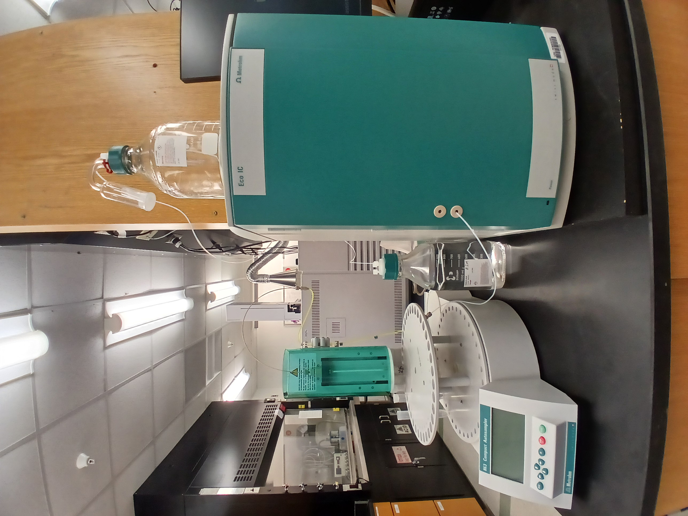

The UNCP Department of Chemistry and Physics has a variety of research instruments available for use by faculty and students in both teaching and undergraduate research settings.
SPECTROMETRY
| Stellarnet Port-LIBS system | Ocean Optics Apex 785 | Agilent 4100 MPS-AES |
|---|---|---|
| laser-induced breakdown spectrometer |
Raman spectrometer |
Microwave plasma atomic emission spectrometer |
| Year acquired: 2017 | Year acquired: 2014 | Year acquired: 2012 |
| Agilent Cary 60 UV-Vis | Agilent Model 55B | Perkin Elmer Spectrum 65 / Spotlight 150 |
| scanning spectrometer with fiber optic dip probe |
atomic absorption / emission spectrometer with SIPS 20 autosampler |
 Fourier transform infrared (FTIR) microscope system |
| Year acquired: 2023 | Year acquired: 2004, 2012 | Year acquired: 2010 |
| Anasazi Instruments 90 MHz FTNMR |
Perkin Elmer Spectrum One | Buck Scientific Model 200A |
| Fourier transform nuclear magnetic resonance (FTNMR) spectrometer |
Fourier transform infrared (FTIR) spectrometer |
atomic absorption / emission spectrometer |
| Year acquired: 1998 (updated 2010, 2019 with new USB interface and computer) | Year acquired: 2005 | Year acquired: 1992 |
| Shimadzu RF-5301 | Nanalysis NMReady-60PRO | |
| spectrofluorophotometer |
Benchtop NMR Spectrometer |
|
| Year acquired: 2012 | Year acquired: 2019 | |
CHROMATOGRAPHY
| Shimadzu QP2010 SE | Metrohm EcoIC Ion Chromatograph |
Agilent Model 5977B / 7890B |
|---|---|---|
gas chromatograph-mass spectrometer |
 ion chromatograph |
gas chromatograph-mass spectrometer |
| Year acquired: 2022 | Year acquired: 2021 | Year acquired: 2018 |
| SRI Instruments model 8610C | Shimadzu Model LC-20AT | |
| gas chromatograph with FID |
liquid chromatographs with UV/VIS detectors (2) |
|
| Year acquired: 2008 | Year acquired: 2006/2012 | |
ELECTROCHEMISTRY
| Bioanalytical Systems Incorporated Epsilon |
Pine Research Instrumentation WaveDriver 20 |
|
|---|---|---|
| Electrochemical Analyzers (2) |
Electrochemical Analyzer |
|
| Year acquired: 2012, 2015 | Year acquired: 2014 | |
MISCELLANEOUS
| Advion expression(S) CMS | Shimadzu Model DSC-60 Plus | Stanford Research Systems Model QMS200 |
|---|---|---|
| mass spectrometer |
differential scanning calorimeter with liquid nitrogen auto-cooling system |
gas analyzer (quadrupole mass spectrometer with electron ionization source) |
| Year acquired: 2015 | Year acquired: 2025 | Year acquired: 2024 |